Module
Design patterns
Các pattern kinh điển của nhóm Gang of Four, chia thành ba nhóm theo loại vấn đề chúng giải quyết. Mỗi bài mở đầu bằng một cỗ máy nhỏ, và cách cỗ máy chạy cũng chính là cách pattern vận hành. Tiếp theo là một bài toán backend quen thuộc, với code Python và TypeScript trước và sau khi áp dụng pattern, chạy được ngay.
Đã có đủ 23 bài, từ những pattern gặp hằng ngày tới những pattern ít dùng hơn. Mỗi bài kết thúc bằng vài câu hỏi ngắn để bạn tự kiểm tra.
- ★★★ rất hay gặp trong backend
- ★★★ ít gặp hơn
Creational Tạo đối tượng
5 bài
Nhóm này lo chuyện tạo đối tượng. Thay vì rải lệnh tạo đối tượng khắp nơi, ta gom việc đó về một chỗ, để sau này đổi cách tạo mà không phải sửa những đoạn code đang dùng nó.
-
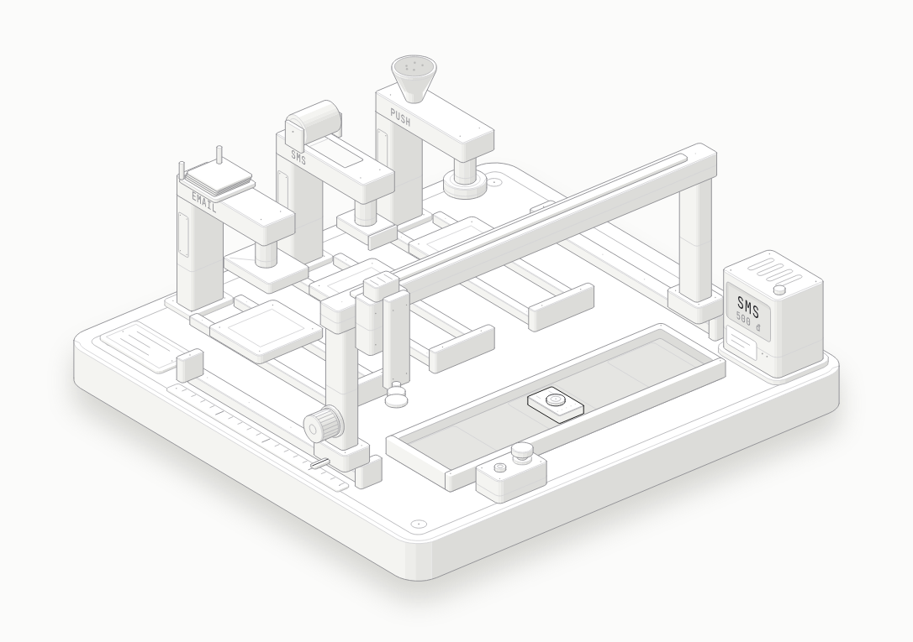
Factory Method★★★ Để lớp con quyết định tạo đối tượng nào, còn phần xử lý chung chỉ cần biết interface của nó. Mở bài -
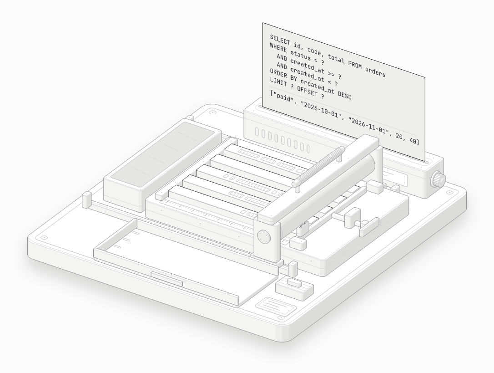
Builder★★★ Lắp một đối tượng phức tạp qua từng bước rõ ràng, giống cách dựng câu truy vấn bằng query builder. Mở bài -
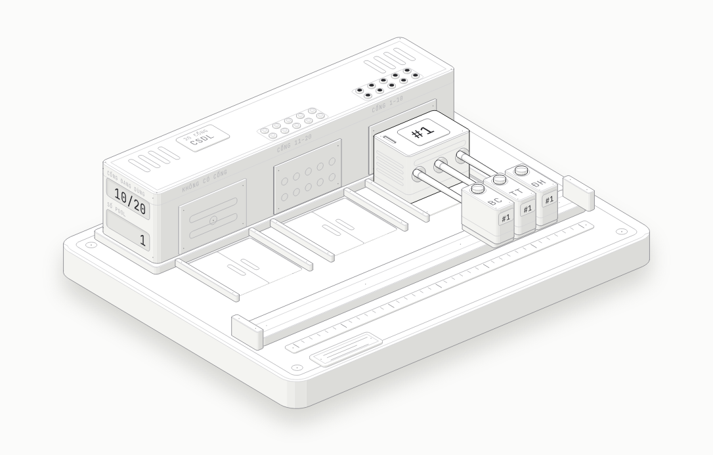
Singleton★★★ Bảo đảm cả chương trình chỉ có đúng một thể hiện. Pattern này dễ bị dùng sai, nên ngày nay thường để DI container lo. Mở bài -
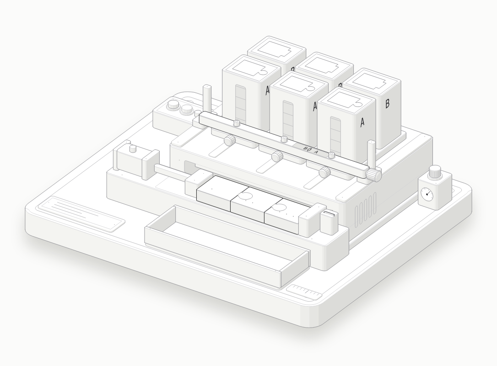
Abstract Factory★★★ Tạo cả một bộ đối tượng luôn đi cùng nhau, để chúng không bao giờ bị lắp lẫn bộ. Mở bài -
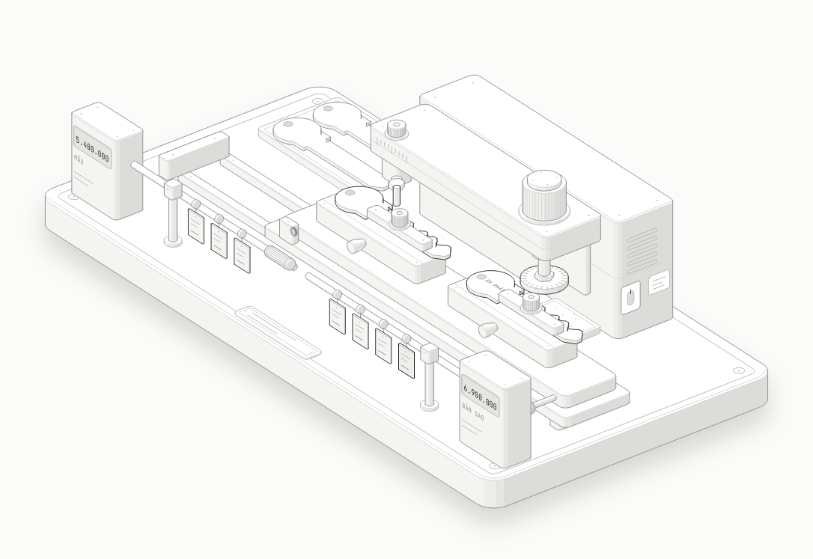
Prototype★★★ Tạo đối tượng mới bằng cách sao chép một mẫu có sẵn thay vì dựng lại từ đầu. Mở bài
Structural Ghép đối tượng
7 bài
Nhóm này bàn về cách ghép các lớp và đối tượng thành một cấu trúc lớn hơn, sao cho từng phần vẫn đơn giản và dễ thay thế.
-
 Adapter★★★
Khi dữ liệu bên ngoài không khớp với interface của hệ thống, Adapter đứng giữa để chuyển đổi, như một cục chuyển đổi phích cắm.
Mở bài
Adapter★★★
Khi dữ liệu bên ngoài không khớp với interface của hệ thống, Adapter đứng giữa để chuyển đổi, như một cục chuyển đổi phích cắm.
Mở bài
-
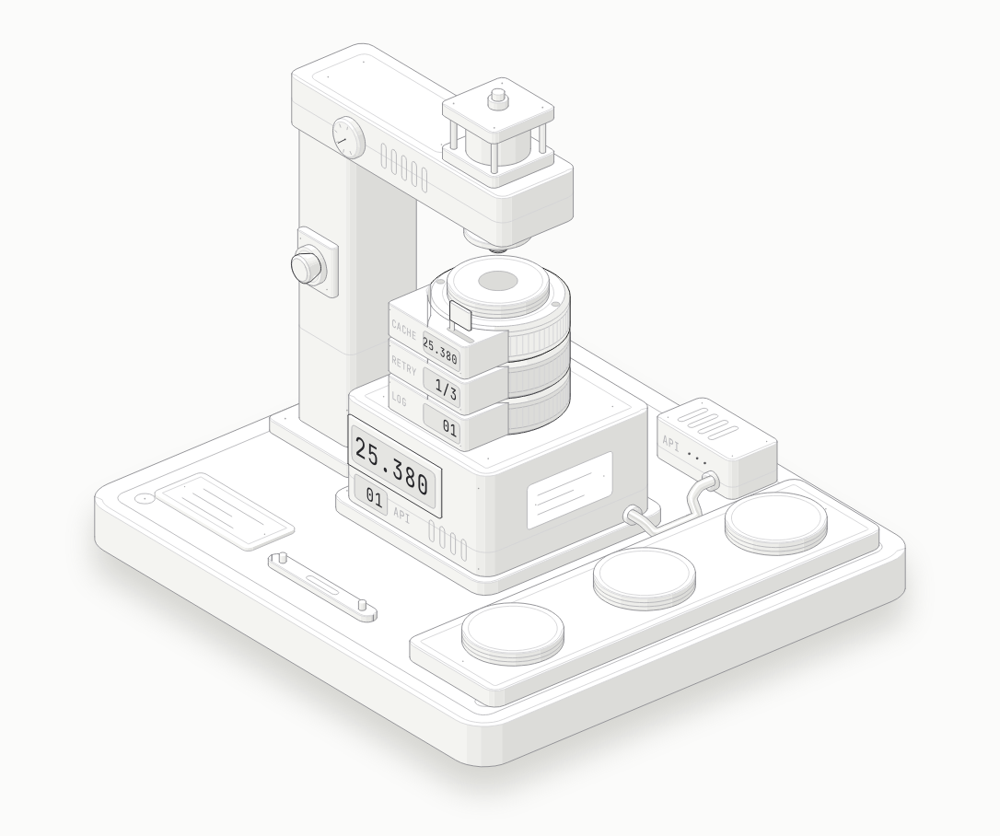
Decorator★★★ Bọc thêm cache, log hay retry quanh một đối tượng mà không phải sửa lớp gốc. Mở bài -
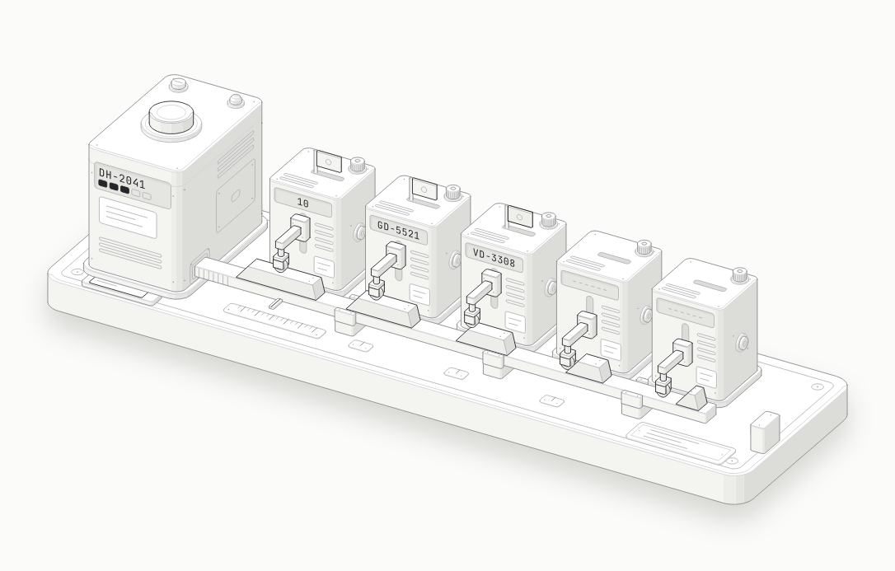
Facade★★★ Gom cả một chuỗi thao tác rắc rối về sau một cửa duy nhất, để bên gọi chỉ cần một lệnh. Mở bài -
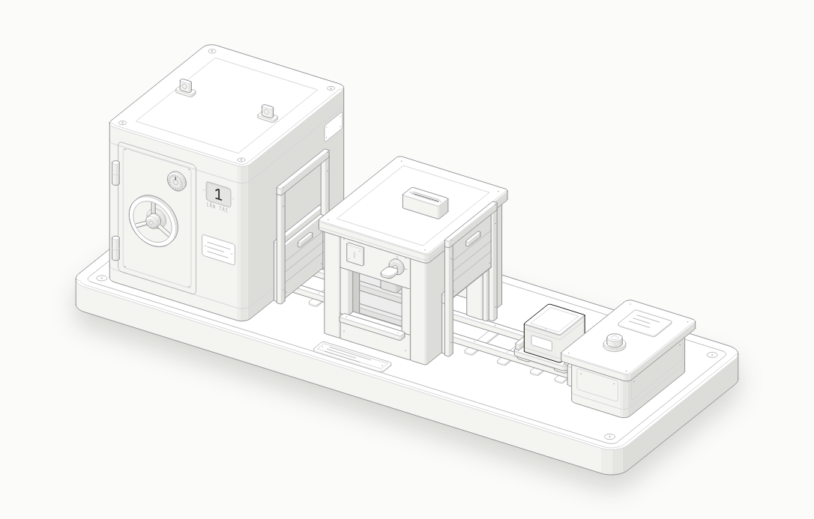
Proxy★★★ Đứng thay đối tượng thật để kiểm tra quyền, chỉ tải khi thật sự cần, hoặc giữ sẵn kết quả. Mở bài -
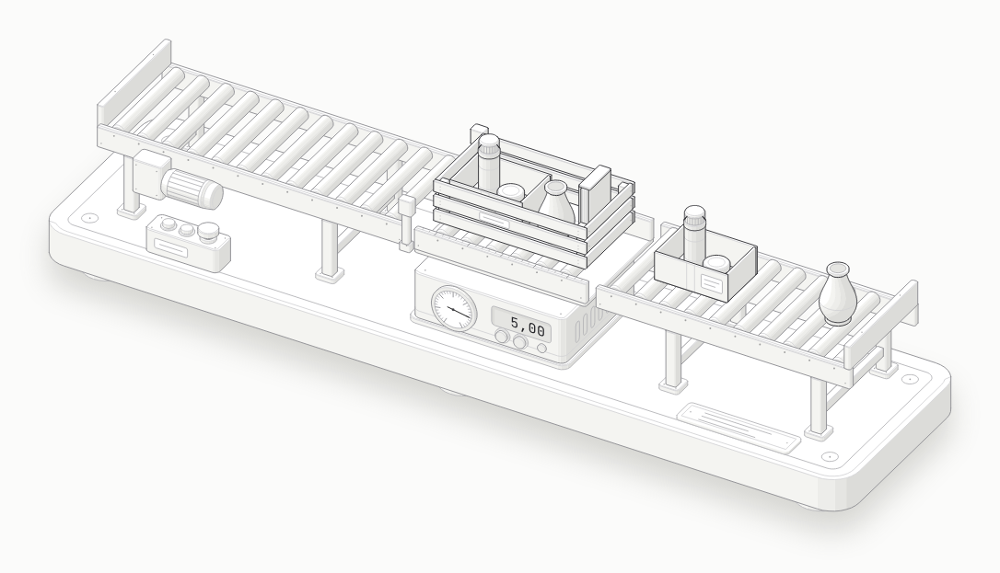
Composite★★★ Xử lý một món hàng lẻ và cả một thùng hàng nhiều tầng theo cùng một cách. Mở bài -
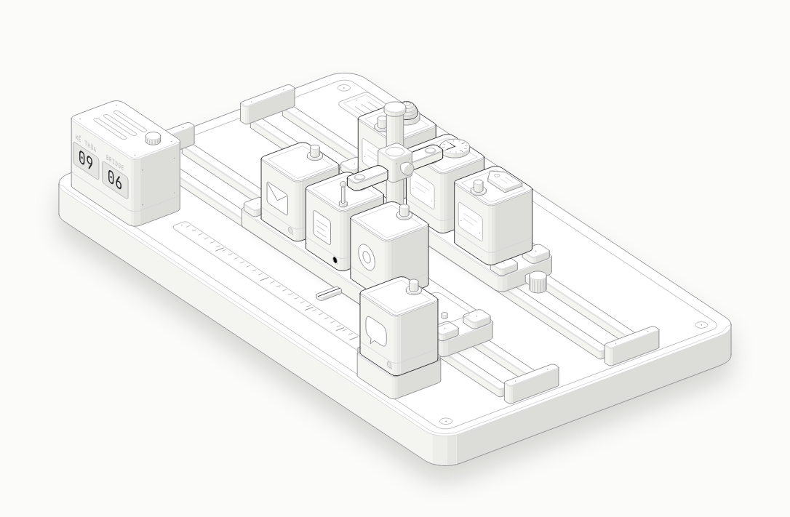
Bridge★★★ Tách hai hướng thay đổi độc lập, chẳng hạn kênh gửi và loại thông báo, để số lớp không nhân lên theo cấp số. Mở bài -
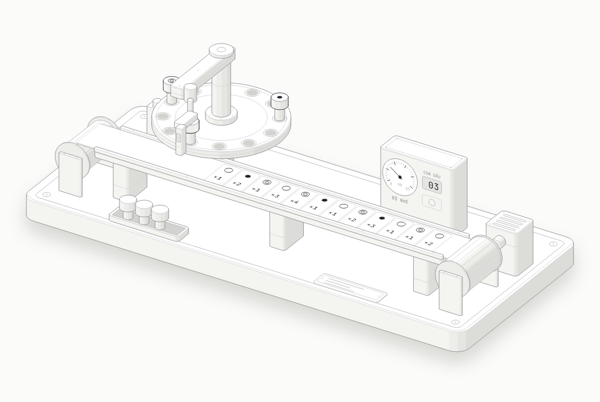
Flyweight★★★ Dùng chung phần dữ liệu không đổi giữa rất nhiều đối tượng để tiết kiệm bộ nhớ. Mở bài
Behavioral Phối hợp giữa các đối tượng
11 bài
Nhóm này trả lời câu hỏi ai làm việc gì và các đối tượng trao đổi với nhau ra sao, để thêm được hành vi mới mà không phải động vào phần đang chạy ổn.
-
 Strategy★★★
Đổi cách tính ngay lúc chạy, chẳng hạn chọn công thức tính phí giao hàng, mà không phải sửa chỗ gọi.
Mở bài
Strategy★★★
Đổi cách tính ngay lúc chạy, chẳng hạn chọn công thức tính phí giao hàng, mà không phải sửa chỗ gọi.
Mở bài
-
 Observer★★★
Một nơi phát sự kiện, nhiều nơi lắng nghe, và không bên nào cần biết bên kia là ai.
Mở bài
Observer★★★
Một nơi phát sự kiện, nhiều nơi lắng nghe, và không bên nào cần biết bên kia là ai.
Mở bài
-
 Chain of Responsibility★★★
Chuyển yêu cầu qua một chuỗi người xử lý, ai lo được thì giữ lại, giống middleware hay luồng duyệt chi.
Mở bài
Chain of Responsibility★★★
Chuyển yêu cầu qua một chuỗi người xử lý, ai lo được thì giữ lại, giống middleware hay luồng duyệt chi.
Mở bài
-
 Command★★★
Đóng gói mỗi yêu cầu thành một đối tượng để xếp hàng, chạy lại hoặc hoàn tác, như job trong queue.
Mở bài
Command★★★
Đóng gói mỗi yêu cầu thành một đối tượng để xếp hàng, chạy lại hoặc hoàn tác, như job trong queue.
Mở bài
-
 State★★★
Để hành vi tự đổi theo trạng thái hiện tại, như luồng duyệt hồ sơ hay vòng đời một đơn hàng.
Mở bài
State★★★
Để hành vi tự đổi theo trạng thái hiện tại, như luồng duyệt hồ sơ hay vòng đời một đơn hàng.
Mở bài
-
 Template Method★★★
Giữ cố định trình tự các bước và chỉ cho lớp con thay vài bước bên trong.
Mở bài
Template Method★★★
Giữ cố định trình tự các bước và chỉ cho lớp con thay vài bước bên trong.
Mở bài
-
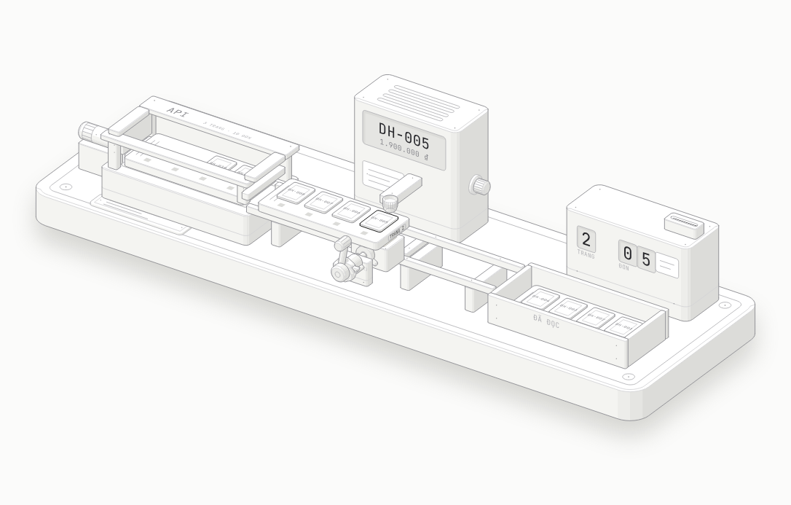
Iterator★★★ Duyệt qua một tập hợp mà không cần biết bên trong nó được lưu ra sao. Mở bài -
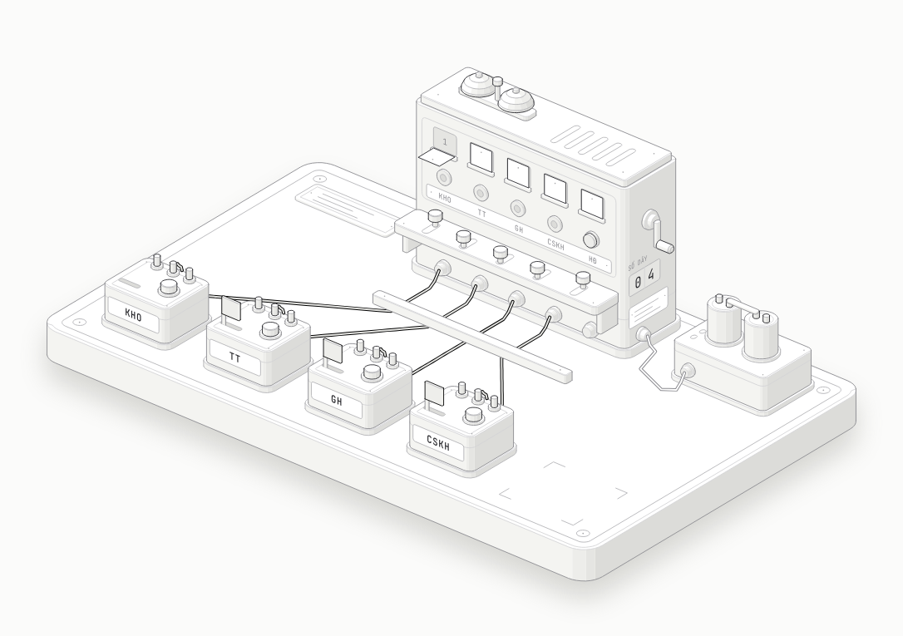
Mediator★★★ Cho các bên trao đổi qua một trung gian thay vì gọi thẳng vào nhau. Mở bài -
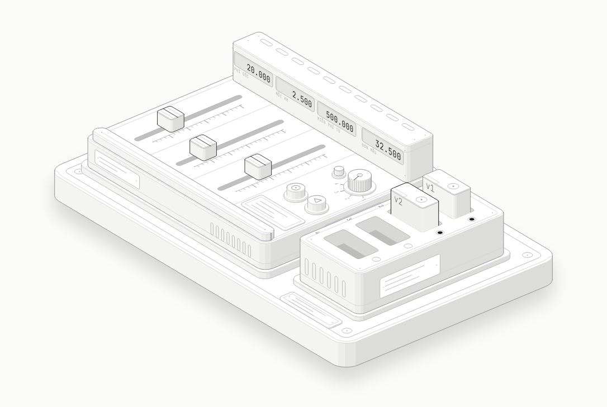
Memento★★★ Chụp lại trạng thái của một đối tượng để có thể khôi phục về sau. Mở bài -
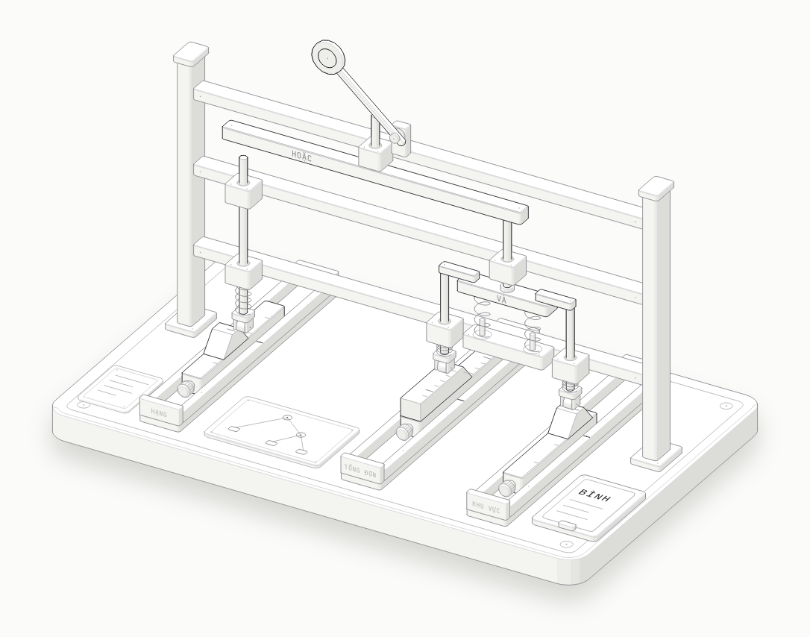
Interpreter★★★ Đánh giá một ngôn ngữ biểu thức nhỏ, chẳng hạn các điều kiện phân quyền. Mở bài -
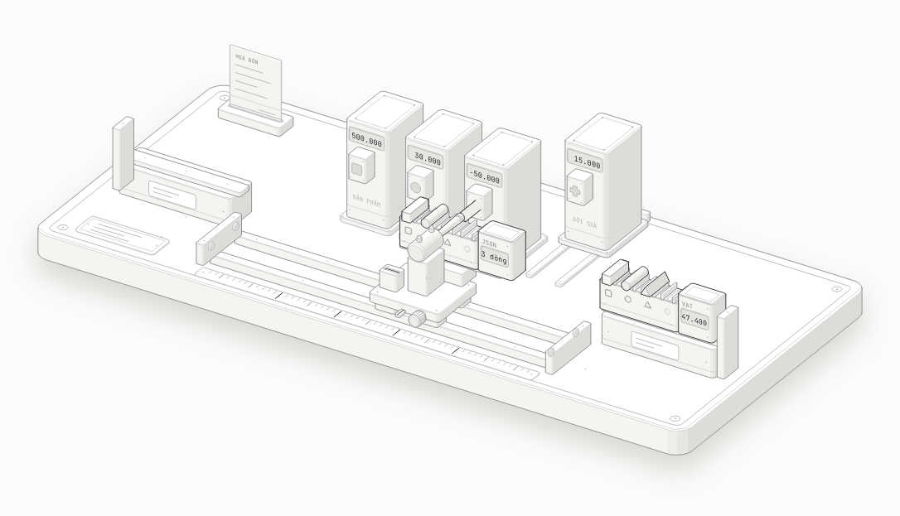
Visitor★★★ Thêm thao tác mới lên một cây đối tượng mà không phải sửa từng lớp trong cây. Mở bài